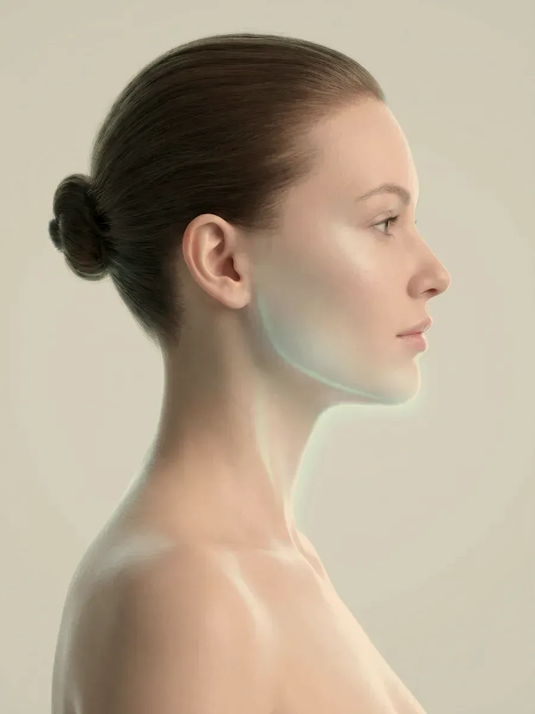

Bakırköy · İstanbul
Tek hekim, net bir plan ve yüzünüze göre ölçülen uygulamalar.
Uzm. Dr. Rahmi Cebeci’nin Bakırköy’deki muayenehanesinde her uygulama bir muayeneyle başlar. Neyin, hangi sırayla ve ne ölçüde yapılacağı sizinle birlikte konuşulur; işlemi yapan ve kontrolünüzü üstlenen hekim aynıdır.
- Muayene ve uygulama aynı hekimde
- Randevulu çalışma düzeni
- Kontrol randevusu planın içinde
Çalışma düzeni
Her uygulamada izlenen beş basamak
Sıra değişmez, basamak atlanmaz. Benzer bir istekle gelen iki kişinin farklı planlarla ayrılması da bu basamaklardan kaynaklanır.
Muayene ve öykü
Ne istediğiniz, cildinizin özellikleri, yüz yapınız ve kullandığınız ilaçlar birlikte ele alınır.
Plan
Uygulamanın türü, bölgesi, sırası ve gerekiyorsa seans aralıkları belirlenir.
Bilgilendirme ve yazılı onam
Hedeflenen etki, görülebilecek yan etkiler ve diğer seçenekler anlatılır; onamınız yazılı alınır.
Uygulama günü
İşlemi hekim kendisi yapar; enjeksiyon ve lazer uygulamaları başka birine bırakılmaz.
Kontrol
Kontrol günü baştan takvime yazılır; sonradan fark edilen bir durumda sizi yine aynı hekim görür.
Adım adım
Seçtiğiniz uygulamada bu süreç nasıl işler?
Listeden bir uygulama seçin; muayene, plan, uygulama günü ve takip aşamaları o uygulamanın kendi sayfasındaki bilgilerle sırayla açılsın. Burada gördüğünüz genel çerçevedir; ayrıntılar muayenede size göre belirlenir.
 Muayene
Muayene Planlama
Planlama Uygulama günü
Uygulama günü Takip ve kontrol
Takip ve kontrolBölgeler
Haritada bir bölge seçin
Her bölgenin deri kalınlığı, damar yapısı ve kas hareketi farklıdır; aynı uygulama bu yüzden her bölgede aynı biçimde yapılmaz. Haritadaki noktalardan ya da yandaki listeden bir bölgeye dokunarak başlayın.

Bu görsel yapay zekâ ile üretilmiştir.
Yüz
Yüzün tamamı tek plan olarak ele alınır; alına, elmacığa ve çene hattına birlikte bakılır, çünkü her biri ötekinin görünümünü değiştirir.
Saçlı Deri
Önce dökülmenin nedeni ayrılır; saç mezoterapisi, saç PRP ve eksozom ancak bundan sonra konuşulur.
Bölge sayfasına gitGöz Çevresi
Koyu halkalar, göz kenarındaki çizgiler ve kaşın konumu. Hata payı en dar bölge olduğundan plan küçük adımlarla ilerler.
Bölge sayfasına gitDudak
Dolgunluk, kenar netliği ve nem ayrı ele alınır. Ölçü kişinin kendi oranıdır; amaç büyütmek değil, dengeyi korumaktır.
Bölge sayfasına gitÇene ve Jawline
Çene hattının netliğini kemik desteği, çene altı yağı, deri gerginliği ve çiğneme kası birlikte belirler.
Bölge sayfasına gitBoyun ve Dekolte
Boyundaki halka çizgileri, dikey bantlar ve göğüs üstündeki güneş lekeleri; yüzden ayrı ayarlarla planlanır.
Bölge sayfasına gitEl
El sırtında hacim azaldıkça damar ve tendonlar öne çıkar; güneş lekeleri de ilk burada birikir.
Bölge sayfasına gitVücut
Karın, bel, kol ve bacakta bölgesel yağlanma, selülit görünümü ve dövme silme. Hiçbir uygulama kilo vermenin yerine geçmez.
Bölge sayfasına gitUygulamalar
Dört grupta toplanan uygulamalar
Enjeksiyonlar, lazer ve cihaz uygulamaları, saçlı deri çalışmaları, değerlendirme ve takip. Her sayfada uygulamanın ne olduğu, kimlere yapılmadığı ve sonrasında nelerle karşılaşabileceğiniz ayrı başlıklar altında anlatılır.
Enjeksiyon Uygulamaları
Botulinum Toksin · Dolgu Uygulamaları · Sıvı Yüz Germe · Gençlik Aşısı (Skinbooster) ve diğerleri
11 uygulamaCihaz Destekli Uygulamalar
Pico Lazer ile Dövme Silme · Pico Lazer ile Leke · Fraksiyonel Lazer · Altın İğne Radyofrekans ve diğerleri
7 uygulamaSaç ve Saçlı Deri
Saç Mezoterapisi · Saç PRP
2 uygulamaDeğerlendirme ve Takip
Hekim Muayenesi · Uygulama Sonrası Takip
2 uygulamaŞikâyetten başlayın
İşlemin adını bilmeniz gerekmiyor
Sizi rahatsız eden durumu seçin. Açılan sayfada olası nedenlerin birbirinden nasıl ayrıldığını ve hangi seçeneklerin konuşulabileceğini bulursunuz.
Yaklaşımımız
Ölçü, uygulamanın kendisi kadar önemlidir
Bu alanda sonucu bozan şey çoğu zaman eksiklik değil, aşırılıktır. Yüz ifadesinin size ait kalması için bazı istekler ertelenir, bazıları hiç uygulanmaz.
Bir uygulama, beklentinizle bölgenin özellikleri örtüştüğünde önerilir. Örtüşmüyorsa gerekçesi açık bir dille anlatılır; bazen doğru karar beklemektir.
Küçük adımlarla ilerleme
İlk uygulamada ölçülü bir miktarla başlanır; etkisi görüldükten sonra ek ihtiyaç varsa tamamlanır.
Geri alınabilirliği gözetme
Seçenekler arasında, gerektiğinde geri alınabilen ya da zamanla vücut tarafından parçalanan ürünler öncelikle düşünülür.
Kontrol planın içinde
Uygulama günü sürecin sonu değildir; kontrol randevusu en baştan takvime eklenir.
Hekim
Uzm. Dr. Rahmi Cebeci
Aile Hekimliği Uzmanı · Medikal Estetik Sertifikalı
Hacettepe Üniversitesi Tıp Fakültesi’nden 2005’te mezun oldu; aile hekimliği uzmanıdır ve Sağlık Bakanlığı onaylı medikal estetik uygulama sertifikasına sahiptir. Muayenehanedeki bütün uygulamaları, bu sertifikanın tanımladığı işlemler sınırında kendisi yapar.
İsteğiniz bu kapsamın dışında kalıyorsa bunu açıkça söyler ve hangi uzmanlık dalına başvurmanızın uygun olacağını anlatır.

Hekimin kendi eliyle
Enjeksiyonlar ile lazer ve cihaz uygulamaları hekim tarafından yapılır; başka bir personele bırakılmaz.
Sertifikanın sınırları içinde
Yapılan işlemler, Bakanlıkça onaylı medikal estetik sertifikasının tanımladığı uygulamalarla sınırlı tutulur.
Hazırlık
Randevudan önce birkaç dakika ayırın
Hazırlık listesi ve cilt tipi testi tarayıcınızın içinde çalışır. Verdiğiniz cevaplar bize ulaşmaz, bir sunucuya yazılmaz ve sayfayı kapattığınızda silinir.
Görüşme öncesi hazırlık listesi
Muayenede söylemeniz gereken ilaç, sağlık öyküsü ve önceki uygulama bilgilerini toparlamanıza yardım eder. Tanı koymaz, tarama yapmaz, işlem önermez ve uygunluk kararı vermez.
Listeyi açın Cihazınızda çalışırCilt tipi eğilim testi
On iki kısa soruyla cildinizin nem–yağ dengesini, hassasiyetini ve leke eğilimini tarif etmenize yardımcı olur. Bir tanı aracı değildir; cilt tipiniz muayenede değerlendirilir.
Teste geçinSık sorulanlar
Aklınıza takılabilecekler
Bir kategori seçerek listeyi daraltabilirsiniz. Burada yer almayan sorular için sık sorulan sorular sayfasına göz atın.
İlk görüşmede hemen uygulama yapılır mı?
Şart değildir. İlk randevu, beklentinizin konuşulduğu ve muayenenin yapıldığı görüşmedir. Uygun bulunan bazı işlemler aynı gün yapılabilir; birçok durumda ise plan bir sonraki randevuya bırakılır ve kararı acele etmeden verirsiniz.
Randevuya gelmeden önce neleri hazırlamalıyım?
Düzenli kullandığınız ilaç ve takviyelerin adlarını, daha önce bir ilaca ya da ürüne karşı yaşadığınız reaksiyonları ve geçmişte yaptırdığınız estetik uygulamaları not edin. Sitedeki hazırlık listesi bu bilgileri birkaç dakikada toparlamanızı kolaylaştırır; cevaplarınız cihazınızda kalır.
WhatsApp’tan fotoğraf göndererek değerlendirme alabilir miyim?
Hayır. WhatsApp hattı yalnızca randevu düzenlemek için kullanılır; fotoğraf ya da mesaj üzerinden tıbbi değerlendirme yapılmaz, uygulama önerilmez. Işık, açı ve ekran farkları görüntüyü yanıltıcı kılar; karar ancak muayenede verilebilir.
Pico lazerle dövme silme kaç seans sürer?
Seans sayısı mürekkebin rengine, yoğunluğuna, derinliğine, dövmenin yaşına ve bulunduğu bölgeye göre değişir; bu yüzden baştan tek bir sayı verilmez. Seanslar arasında cildin toparlanması için genellikle birkaç haftalık ara bırakılır. Hedeflenen, dövme görünümünün seanslar ilerledikçe açılmasıdır; sonuçlar kişiden kişiye değişir.
Uygulamadan sonra ne zaman günlük hayatıma dönerim?
Bu, yapılan işleme bağlıdır. Bazı uygulamalardan sonra aynı gün işinize dönebilirsiniz; bazılarında birkaç gün süren kızarıklık, şişlik ya da morarma görülebilir. Her uygulama sayfasında iyileşme dönemi ayrı bir başlık altında anlatılır.
İşlemi kim uyguluyor?
Muayenehanedeki bütün medikal estetik uygulamalarını Uzm. Dr. Rahmi Cebeci kendisi yapar. Sizi muayene eden, planı kuran, işlemi uygulayan ve kontrolünüzü yapan hekim aynı kişidir.
Ücret bilgisi neden sitede yer almıyor?
Sağlık hizmetlerinin tanıtımını düzenleyen mevzuat, internet sitesinde ücret, indirim ya da kampanya duyurusu yapılmasına izin vermez. Ayrıca ücret, muayenede ortaya çıkan plana göre değişir; bu bilgi size muayene sırasında, kişisel olarak iletilir.
Muayenehanede yapılmayan işlemler var mı?
Var. Cerrahi girişimler, saç ekimi ve hekimin sertifikasının kapsamadığı işlemler burada uygulanmaz. Böyle bir talepte nedeni açıklanır ve ilgili uzmanlık dalına başvurmanız önerilir.
Bu kategoride henüz soru yok.
İletişim
Bakırköy, Cevizlik Mahallesi
Randevu için telefonla arayabilir, aynı numaradan WhatsApp’a yazabilir ya da iletişim sayfasındaki formu doldurabilirsiniz.
- AdresCevizlik Mah. Ebuziya Cad. No:47/1
Bakırköy / İstanbul - Telefon0539 933 08 08
- WhatsApp+90 539 933 08 08
- Çalışma saatleriPazartesi – Cumartesi: 09:00 – 19:00
Pazar: Kapalı